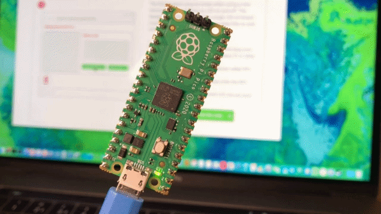

The LED blinking program is one of the first projects used to learn MicroPython on the Raspberry Pi Pico. It introduces how to control hardware, use loops, and create delays.
The Raspberry Pi Pico controls electronic components through its GPIO (General Purpose Input/Output) pins. To turn an LED on and off, the pin must be configured as an output, because the Pico sends signals to the LED.
The program imports two modules:
machine module to control the LED.time module to create delays.from machine import Pin
from time import sleepAn object named myled is created to represent the onboard LED.
myled = Pin("LED", Pin.OUT)"LED" refers to the Pico's built-in LED.Pin.OUT sets the pin as an output.The program uses an infinite loop so the LED keeps blinking.
while True:Inside the loop:
myled.value(0) turns the LED off.sleep(0.3) waits for 0.3 seconds.myled.value(1) turns the LED on.sleep(0.3) waits another 0.3 seconds.This sequence repeats continuously, making the LED blink.